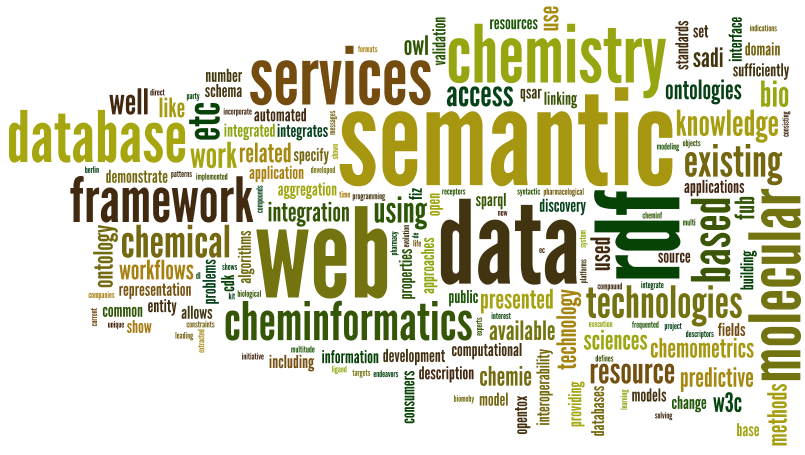
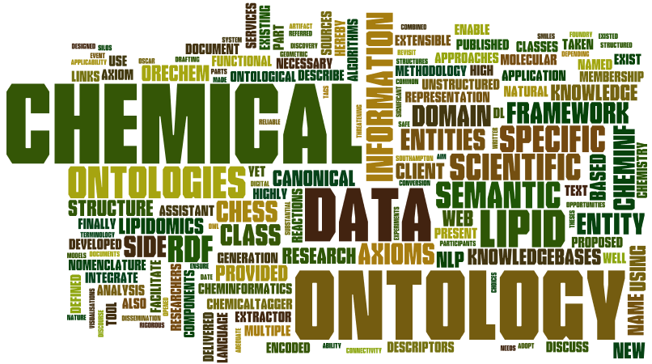
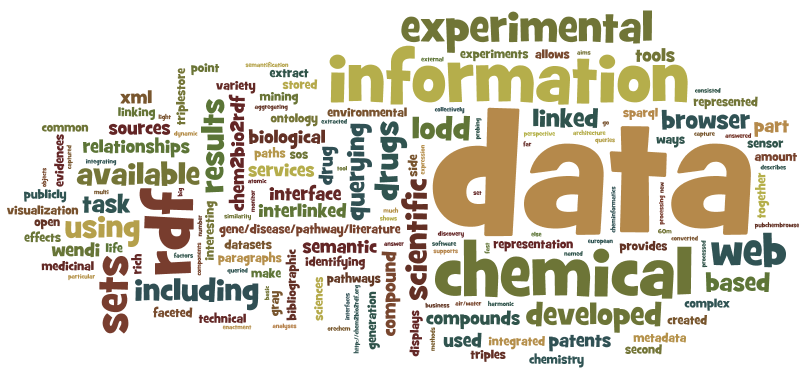

ACS RDF Symposium, Boston, August 2010

The meeting will be at the Boston Convention & Exhibition Center from 2010-08-22 to 2010-08-23.
What you need to know
The symposium is using the tag acsrdf2010. You can subscribe to these channels to keep informed:
- FriendFeed
- Twitter #ACS_Boston Cloud (thanx to Rajarshi!)
Premeeting discussions can be held at this mailing list.
Registration
Registration is done via the ACS website. Further information can be requested on the aforementioned mailing list, or directly with the organizers.
Program
Presentations are 25 minutes + 5 minutes for questions, except for the first presentation, which will have an additional 20 minutes which the speaker is kindly invited to use to set the theme of the session and to take a bit more time to explain the core concepts.
CINF003: RDF and Computation
Sunday, 8:45-11:55

| Time | Speaker | Title |
| 8:45 | Chair | Introduction |
| 8:55 | Leonid Chepelev | Semantic envelopment of cheminformatics resources with SADI
Abstract
The distribution of computational resources as web services and their execution
as workflows has enabled facile computation and data integration for bio− and
cheminformatics. The Semantic Automated Discovery and Integration (SADI)
framework addresses many shortcomings of similar frameworks, such as SSWAP and
BioMoby, while allowing for more efficient semantic envelopment of computational
chemistry services, resource discovery, and automated workflow organization. In
this work, we apply the CHEMINF ontology and Chemical Entity Semantic
Specification and demonstrate the usability of the SADI framework in solving
common cheminformatics problems starting from RDF−based chemical entity
representations. Our eventual goal is to convert all of the functions and
functionalities of the Chemistry Development Kit (CDK) into distinct SADI
services. This would enable the formulation of all cheminformatics problems
currently addressed by CDK, as SPARQL queries, returning meaningful RDF output
which can then be easily integrated with existing RDF−based knowledgebases or
used for further processing.
|
| 9:40 | Nina Jeliazkova | RESTful RDF Web Services for Predictive Toxicology
Abstract
The Open Source Predictive Toxicology Framework http://www.opentox.org,
developed by partners of the EC FP7 OpenTox project , aims at providing a
unified access to toxicity data and predictive models, as well as validation
procedures. This is achieved by i) an information model, based on a common
OWL−DL ontology http://www.opentox.org/api/1.1/opentox.owl ii) flexibility by
linking with related ontologies; iii) availability of data and algorithms via a
standardized REST web services interface, where every compound, data set or
predictive method has an unique web address, used to retrieve its RDF
representation, or initiate the calculations. The OpenTox framework allows
building user−friendly applications for toxicological experts or model
developers, or direct access by an application programming interface for
development, integration and validation of new algorithms. The work presented
describes the experience of building RESTful web services, based on RDF
representation of resources, to incorporate diverse IT solutions into a
distributed and interoperable system.
PDF
|
| 10:10 | Intermission | |
| 10:25 | Egon Willighagen | Linking the Resource Description Framework to Cheminformatics and
Proteochemometrics
Abstract
Semantic web technologies are finding their way into the life sciences.
Ontologies and semantic markup have already been used for more than a decade in
molecular sciences, but have not found widespread use yet. The semantic web
technology Resource Description Framework (RDF) and related methods show to be
sufficiently versatile to change that situation. The work presented here focuses
on linking RDF approaches to existing molecular chemometrics fields, including
cheminformatics, QSAR modeling and proteochemometrics. Applications are
presented that link RDF technologies to methods from statistics and
cheminformatics, including data aggregation, visualization, chemical
identification, and property prediction. They demonstrate how this can be done
using various existing RDF standards and cheminformatics libraries. For example,
we show how IC50 and Ki values are modeled for a number of biological targets
using data from the chEMBL database. We have shown that existing RDF standards
can suitably be integrated into existing molecular chemometrics methods.
Platforms that unite these technologies, like Bioclipse, makes this even simpler
and more transparent. Being able to create and share workflows that integrate
data aggregation and analysis (visual and statistical) is beneficial to
interoperability and reproducibility. The current work shows that RDF approaches
are sufficiently powerful to support molecular chemometrics workflows.
|
| 10:55 | Stephan Heineke | Chemical e−Science Information Cloud (ChemCloud): A Semantic Web
based eScience infrastructure
Abstract
Our Chemical e−Science Information Cloud (ChemCloud) − a Semantic Web based
eScience infrastructure − integrates and automates a multitude of databases,
tools and services in the domain of chemistry, pharmacy and bio−chemistry
available at the Fachinformationszentrum Chemie (FIZ Chemie), at the Freie
Universitaet Berlin (FUB), and on the public Web. Based on the approach of the
W3C Linked Open Data initiative and the W3C Semantic Web technologies for
ontologies and rules it semantically links and integrates knowledge from our W3C
HCLS knowledge base hosted at the FUB, our multi−domain knowledge base DBpedia
(Deutschland) implemented at FUB, which is extracted from Wikipedia (De)
providing a public semantic resource for chemistry, and our well−established
databases at FIZ Chemie such as ChemInform for organic reaction data, InfoTherm
the leading source for thermophysical data, Chemisches Zentralblatt, the
complete chemistry knowledge from 1830 to 1969, and ChemgaPedia the largest and
most frequented e−Learning platform for Chemistry and related sciences in German
language.
|
| 11:25 | Anay Tamhankar | Use of semantic web services to access
small molecule ligand database
Abstract
Resource Description Framework (RDF) and a set of associated technologies like
OWL, SPARQL etc..., which form the W3C's semantic web technology stack, are
renewing interest in semantic chemistry. Semantic Web Services not only specify
syntactic interoperability but also specify and enforce the semantic constraints
of messages being transmitted and objects being accessed. Liceptor database is a
small molecule ligand database consisting of approximately 4 million compounds.
The database schema consists of fields like molecular properties (2D−structure,
molecular weight, molecular formula etc...), molecular descriptors (H−donors,
H−acceptors, logP, logD number of rotational bonds etc...) and pharmacological
properties (bio−assays, receptors, enzymes, parameters, animal models,
therapeutic indications etc...). Pharmaceutical and Bio−Technology companies use
this database to mine chemical space for internal research, to prioritize QSAR
and pharmacophore studies, for synthetic chemistry endeavors and for advancing
hit−to−lead patterns. The database records are available in multiple formats
(relational database, XML, Rdfile etc...) as well as available online through an
interactive web application (html format). The soon to be released version of
the database includes access using semantic web services. The ontology is
expressed in OWL and
RDF defines the overall framework.
Typical consumers of the data using this access mechanism are expected to be third−party
tool vendors and data aggregators. Use of semantic web services allows evolution
of the schema over time without explicitly communicating the change as well as
requiring all data consumers to be changed.
|
| 11:55 | End |
CINF0031: RDF and Ontologies
Monday, 8:20-11:30

| Time | Speaker | Title |
| 8:20 | Chair | Introduction |
| 8:30 | Jeremy Frey | Using the oreChemexperiments ontology: Planing and enacting chemistry
Abstract
This paper presents the oreChem Experiments Ontology, an extensible model that
describes the formulation and enactment of scientific methods (referred to as
“plans”), designed to enable new models of research and facilitate the
dissemination of scientific data on the Semantic Web. Currently, a high level of
domain−specific knowledge is required to identify and resolve the implicit links
that exist between digital artefacts, constituting a significant
barrier−to−entry for third parties that wish to discover and reuse published
data. The oreChem ontology radically simplifies and clarifies the problem of
representing an experiment to facilitate the discovery and re−use of the data in
the correct context. We describe the main parts of the ontology and detail the
enhancements made to the Southampton eCrystals repository to enable the
publication of oreChem metadata.
|
| 9:15 | Leonid Chepelev | CHEMINF: Community−developed ontology of chemical information and algorithms
Abstract
In order to truly convert RDF−encoded chemical information into knowledge and
break out of domain− and vendor−specific data silos, reliable chemical
ontologies are necessary. To date, no standard ontology that addresses all
chemical information representation and service integration needs has emerged
from previously proposed ontologies, ironically threatening yet another “Tower
of Babel” event in cheminformatics. To avoid resultant substantial ontology
mapping costs, we hereby propose CHEMINF, a community−developed modular and
unified ontology for chemical graphs, qualities, descriptors, algorithms,
implementations, and data representations/formalisms. Further, CHEMINF is
aligned with ontologies developed within the OBO Foundry effort, such as the
Information Artifact Ontology. We present the application of CHEMINF to
efficiently integrate two RDF−based chemical knowledgebases with different
representation structures and aims, but common classes and properties from
CHEMINF. Finally, we discuss the steps taken to ensure applicability of this
ontology in the semantic envelopment of computational chemistry resources,
algorithms, and their output.
|
| 9:45 | Intermission | |
| 10:00 | Leonid Chepelev | Chemical Entity Semantic Specification: Knowledge representation
for efficient semantic cheminformatics and facile data integration
Abstract
Though the nature of RDF implies the ability to interoperate and integrate
diverse knowledgebases, designing adequate and efficient RDF−based
representations of knowledge concerning chemical entities is non−trivial. We
hereby describe Chemical Entity Semantic Specification (CHESS), which captures
chemical descriptors, molecular connectivity, functional composition, and
geometric structure of chemical entities and their components. CHESS also
handles multiple data sources and multiple conformers for molecules, as well as
reactions and interactions. We demonstrate the generation of a chemical
knowledgebase from disparate data sources, using which we conduct an analysis of
the implications of design choices taken in CHESS on the efficiency of solutions
for some classical cheminformatics problems, including molecular similarity
searching and subgraph detection. We do this through automated conversion of
SMILES−encoded query fragments into SPARQL queries and DL−Safe rules. Finally,
we discuss approaches to identification of potential reaction participants and
class members in chemical entity knowledgebases represented with CHESS.
|
| 10:30 | Alexandre Kouznetsov | Semantic Assistant for Lipidomics Researchers
Abstract
Lipid nomenclature has yet to become a robust research tool for lipidomics or
lipid research in general. This is in part because no rigorous structure based
definitions exist for membership of specific lipid classes has existed. Recent
work on the OWL−DL Lipid Ontology with defined axioms for class membership and
has provided new opportunities to revisit the lipid nomenclature issue [1], [2].
Also necessary is a framework for sharing these axioms with scientists during
scientific discourse and the drafting of publications. To achieve this we
introduce here a new paradigm for Lipidomics researchers in which a client side
application tags raw text about lipids with information, such as canonical name
or relevant functional groups, derived from the ontology and is delivered using
web services. Our approach includes following core components: (i)Semantic
Assistant Framework [6]; (ii) Lipid ontology [4]; (iii) Ontological NLP
methodology; (iv) Ontology Axiom−extractor for the GATE framework. The Semantic
Assistant Framework is aservice−oriented architecture used to enhancing existing
end−user clients, such Open Office Writter, with online Lipidomics text analysis
capabilities provided as a set of web services. The Ontological NLP methodology
links Lipid named entities occurred in a document opened on client side with
existing ontologies on server side. The Ontology Axiom−extractor annotates each
named entity with canonical name, class name and related class axioms providing
annotation for documents on the client side. The proposed system is scalable and
extensible allowing researchers to easily customize the information to be
delivered as annotations depending on the availability of chemical ontologies
with defined axioms linked to canonical names for chemical entities.
|
| 11:00 | Lezan Hawizy | ChemicalTagger: A Tool for Semantic Text−Mining in Chemistry
Abstract
The primary method for scientific communication is in the form of published
scientific articles and theses and the use of natural language combined with
domain−specific terminology. As such, they contain unstructured data. Given the
unquestionable usefulness of data extraction from unstructured literature, we
aim to show how this can be achieved for the discipline of chemistry. The highly
formulaic style of writing most chemists adopt make their contributions well
suited to high−throughput Natural Language Processing (NLP) approaches. Using
chemical synthesis procedures as an exemplar, we present ChemicalTagger.
ChemicalTagger is a tool that combines chemical entity recognisers such as OSCAR
with tokenisers, part−of−speech taggers and shallow parsing tools to produce a
formal structure of reactions. This extracted data can then be expressed in RDF.
This allows for the generation of highly informative visualisations, such as
visual document summaries, structured querying and further enrichment can be
provided by linking with domain specific ontologies.
|
| 11:30 | End |
CINF0032: RDF and Chemical Applications
Monday, 13:05-16:15

| Time | Speaker | Title |
| 13:05 | Chair | Introduction |
| 13:15 | Eric Prud'hommeaux | Overview of the linking open drug data task
Abstract
There is much interesting information about drugs that is available on the Web.
Data sources range from medicinal chemistry results, to the impacts of drugs on
gene expression, through to the results of drugs in clinical trials. Linking
Open Drug Data (LODD) is a task within the W3C's Health Care Life Sciences
Interest Group. LODD has surveyed publicly available data sets about drugs,
created Linked Data representations of the data sets and interlinked them
together, and identified interesting scientific and business questions that can
be answered once the data sets are connected. The task also actively explores
best practices for exposing data in a Linked Data representation The figure
below shows part of the data sets that have been published and interlinked by
the task so far. The LODD data sets are represented in dark gray, while light
gray represents other Linked Data from the life sciences, and white indicates
data sets from different domains. Collectively, the LODD data sets consist of
over 8 million RDF triples, which are interlinked by more than 370,000 RDF
links. This presentation will introduce the LODD task and show examples of
recent.
|
| 14:00 | Jeremy Frey | Control, monitoring, analysis and dissemination of laboratory
physical chemistry experiments using semantic web and broker technologies
Abstract
A suite of software was developed to control and monitor experimental and
environmental data and used for probing of the air/water interface using Second
Harmonic Generation. A centralised message broker enabled a common communication
protocol between all objects in the system; experimental apparatus, data
loggers, storage solutions and displays. The data and context are captured and
represented in ways compatible with the Semantic Web. Experimental plans and the
enactment are described using the oreChem experiments ontology; this provides
the means to capture the metadata associated with the experimental process and
the resulting data. Environmental data was stored in the Open Geospatial
Consortium Sensor Observation Service (SOS). The SOS is part of the Sensor Web
Enablement architecture; this describes a number of interoperable interfaces and
metadata encodings for integrating sensors webs into the cloud. A mashup web
interface was produced to link all these sources of information from a single
point.
|
| 14:30 | Intermission | |
| 14:45 | Dave Jessop | Semantic Analysis of Chemical Patents
Abstract
Chemical patents are a rich source of technical and scientific information. They
include meta−data, such as bibliographic information, as well as scientific data
relating to reactions and synthesis experiments. However, they are lengthy,
largely unstructured and rich in technical terminology such that it takes a
signification amount of human efforts for analyses. This would make them an
ideal candidate for 'semantification'. As a demonstration, an RDF triplestore of
chemical patents is created. The patents, provided by the European Patent
Office, are in an XML format. Document segmentation is used initially to extract
the relevant information, mainly bibliographic information and experimental
paragraphs. The experimental paragraphs are then processed using Natural
Language Processing tools to extract the various components of the chemical
reaction; roles, such as reactant, product or solvent, are then assigned. This
extracted information is then converted into RDF and stored in a triplestore
where it can then be queried, visualised and basic inferences can be made.The
ultimate goal of this semantic representation, is to make data available and
re−usable by the scientific community.
|
| 15:15 | David Wild | Data mining and querying of integrated chemical and biological
information using Chem2Bio2RDF
Abstract
We have recently developed a freely−available resource called
Chem2Bio2RDF
that consists of chemical, biological and chemogenomic
datasets in a consistent RDF framework, along with SPARQL querying tools that
have been extended to allow chemical structure and similarity searching.
Chem2Bio2RDF allows integrated querying that crosses chemical and biological
information including compounds, publications, drugs, genes, diseases, pathways
and side−effects. It has been used for a variety of applications including
investigation of compound polypharmacology, linking drug side−effects to
pathways, and identifying potential multi−target pathway inhibitors. In the work
reported here, we describe a new set of tools and methods that we have developed
for querying and data mining in Chem2Bio2RDF, including: Linked Path Generation
(a method for automatically identifying paths between datasets and generating
SPARQL queries from these paths); an ontology for integrated chemical and
biological information; a Cytoscape plugin that allows dynamic querying and
network visualization of query results; and a facet−based browser for browsing
results.
|
| 15:45 | Qian Zhu | Mining and visualizing chemical compound−specific
Chemical−Gene/Disease/Pathway/Literature relationships
Abstract
In common with most scientific disciplines, there has in the last few years been
a huge increase in the amount of publicly−available and proprietary information
pertinent to drug discovery, owing to a variety of factors including
improvements in experimental technologies. So the big challenge for us is how we
can use all of this information together in an intelligent way, in an
integrative fashion. We are developing an application to mine relationships
between Chemical and Gene/Disease/Pathway/Literature, and visualize them. It
aims to help answer the question “anything else should I know about this
compound?” from a medicinal chemistry perspective based on the full picture of
chemicals. For the mining part, we have already developed an aggregating web
services, named WENDI, which calls multiple individual or atomic, web services
including diversity of compound−related data sources, predictive models and
self−developed algorithms, and aggregates the results from these services in
XML; For visualizing, two ways to go: First, we create a RDF reasoner to convert
XML from WENDI to RDF, find inferred relationships based on RDF, rank evidences
focused on chemical−disease, and print all evidences out by using SWP faceted
browser based on Longwell http://simile.mit.edu/wiki/Longwell), it mixes the
flexibility of the RDF data model with the faceted browser to enable users to
browse complex RDF triples in a user−friendly and meaningful manner; Second, we
place all relationships from WENDI into a chemical space consisted of 60M
PubChem compounds, then clustered/highlighted particular chemical compounds with
specific attributes, like gene/disease/pathway/literature by using
PubChemBrowse, which is a customized visualization tool for cheminformatics
research and provides a novel 3D data point browser that displays complex
properties of massive data on commodity clients and supports fast interaction
with an external property database via semantic web interface.
|
| 16:45 | End |
Organizers
Egon Willighagen, Martin Braendle, and Rajarshi Guha.
More RDFa?
As you might have noted, this page is using RDFa to make the content machine readable. But, much content is not annotated yet. Use pyRdfa to extract the current RDFa. Speakers are kindly invited use RDFa to make there abstracts machine readable. Just fork this GitHub repository (as explained here), and send me a pull request.